Chapter 1 Introduction
Statistics in the news
- “It’s machine learning allows the computer to become smarter as it tries to answer questions - and to learn as it gets them right or wrong.”
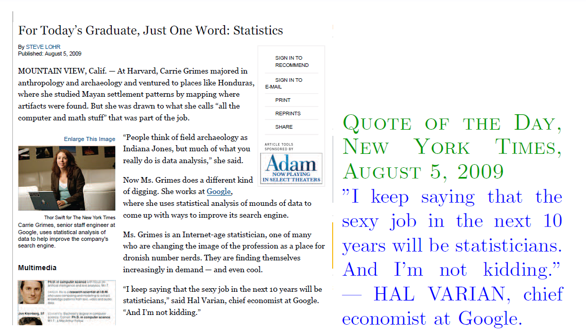
Statistical learning problems
- Identify the risk factors for prostate cancer.
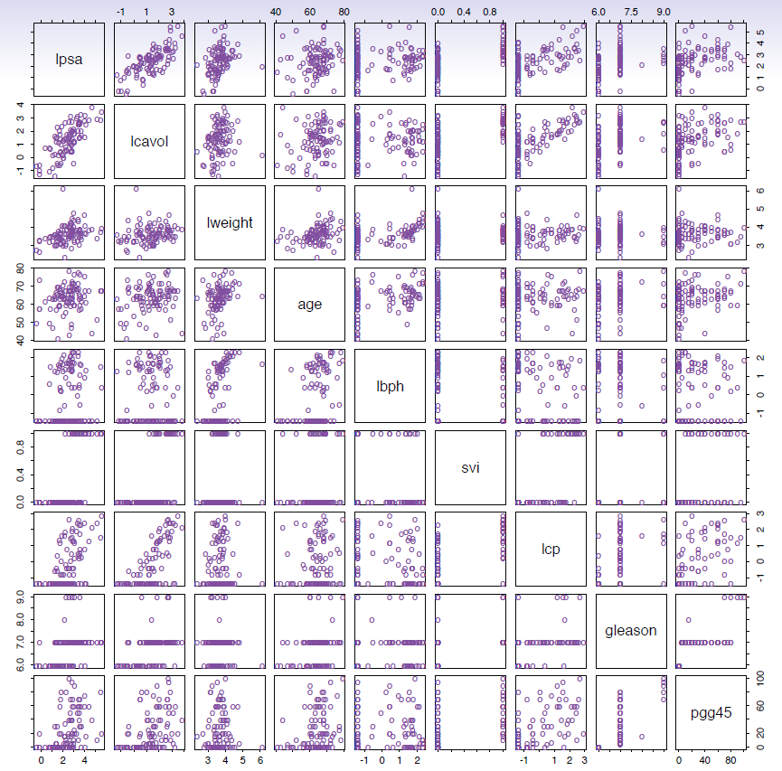
- Classify a recorded phoneme based on a log-periodogram
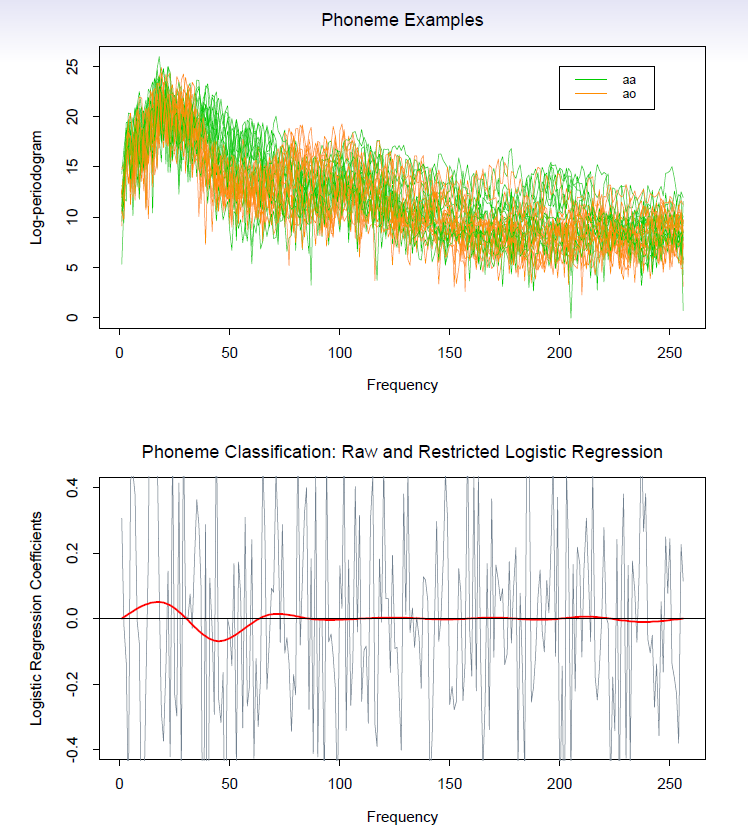
- Predict whether someone will have a heart attack on the basis of demographic, diet and clinical measurements.
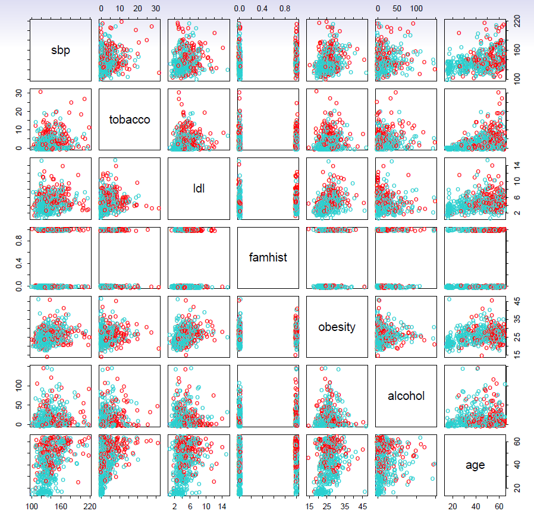
- Customize an email spam detection system.
- data from 4601 emails sent to an individual (named George, at HP labs, before 2000). Each is labeled as spam or email.
- goal: build a customized spam filter.
- input features: relative frequencies of 57 of the most commonly occurring words and punctuation marks in these email messages.
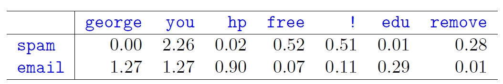
Average percentage of words or characters in an email message equal to the indicated word or character. We have chosen the words and characters showing the largest difference between spam and email.
Identify the numbers in a handwritten zip code.
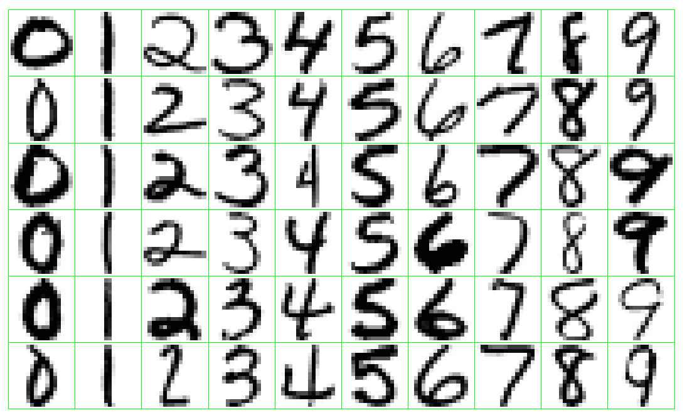
- Classify a tissue sample into one of several cancer classes, based on a gene expression profile.
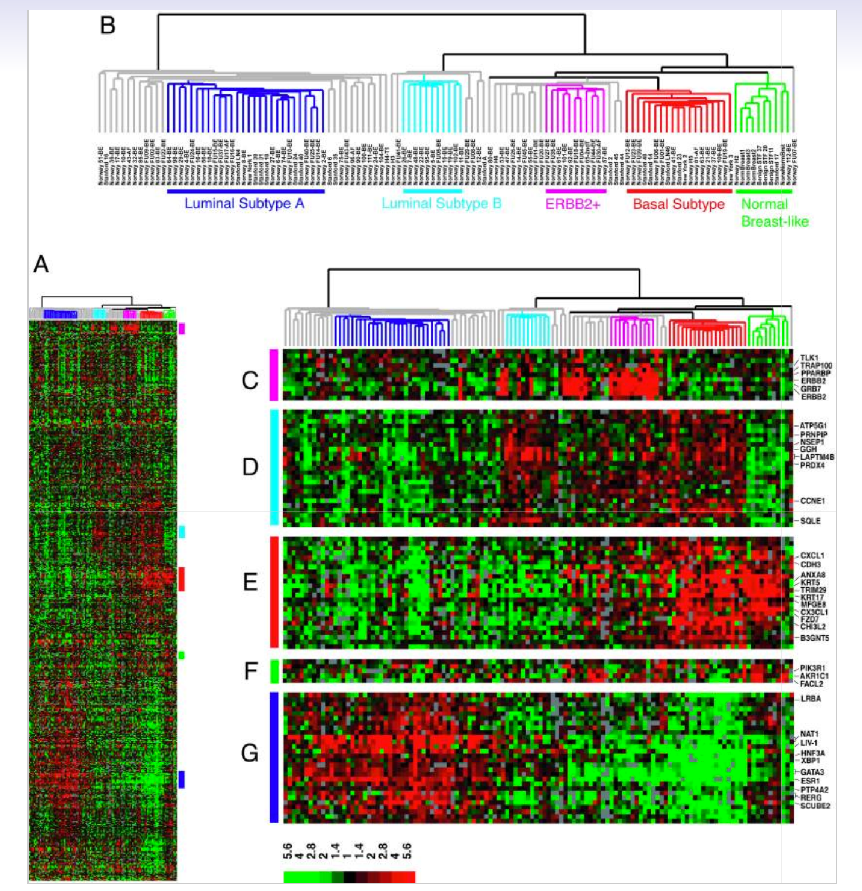
- Establish the relationship between salary and demographic variables in population survey data.
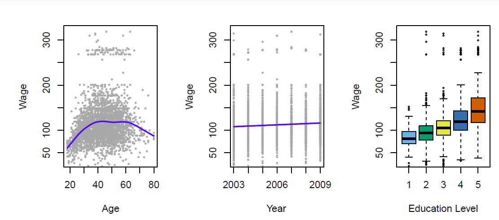
- Classify the pixels in a LANDSAT image, by usage.
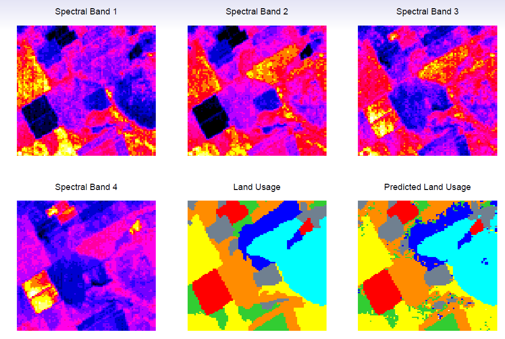
- In these classes we take a statistical learning perspective to statistical techniques of which various multivariate analyses are part of. According to James et al. p.1.
1.1 Understanding Data
Tools for understanding data can be broadly classified as
Supervised learning
Supervised learning involves building a statistical model for predicting, or estimating, an output based on one or more inputs.
The key is learning from training data set and use the training results for prediction purposes as new input data becomes available.
- The learning problem consist of inferring from the training data set the function that can be used to map future inputs to predictions, i.e., give input variables x and output variable(s) \(y\), find function \(f\) such that \(f(x) \approx y\) in a predictive way.
Starting point:
- Outcome measurement \(Y\) (also called dependent variable, response, target)
- Vector of \(p\) predictor measurements \(X\) (also called inputs, regressors, covariates, features, independent variables).
- In the regression problem, \(Y\) is quantitative (e.g price, blood pressure).
- In the *classification problem, \(Y\) takes values in a finite, unordered set (survived/died, digit 0-9, cancer class of tissue sample).
- We have training data \((x_1,y_1), \ldots, (x_N,y_N)\). These are observations (examples, instances) of these measurements.
Tools
- Regression methods; find the functional mapping of input variables to quantitative output variable(s) (e.g. how wage is related to some background variables, like age, education, gender, etc.).
- Classification methods; find functional mapping of input variables to discrete set of classes (e.g. how different financial ratios predict firm solvency {solvent, non-solvent}).
On the basis of the training data we would like to:
- Accurately predict unseen test cases.
- Understand which inputs affect the outcome, and how.
- Assess the quality of out predictions and inferences.
Unsupervised learning
- There are inputs but no supervising output; from such
data we can learn relationships and structures.
- No outcome variable, just a set of predictors (features) measured on a set of samples.
- objective is more fuzzy - find groups of samples that behave similarly, find features that behave similarly, find linear combinations of features with the most variation.
- difficult to know how well your are doing.
- different from supervised learning, but can be useful as a pre-processing step for supervised learning.
- Tools: various clustering methods
The Netflix prize
- Competition started in October 2006. Training data is ratings for 18,000 movies by 400000 Netflix customers, each rating between 1 and 5.
- Training data is very sparse| about 98% missing.
- Objective is to predict the rating for a set of 1 million customer-movie pairs that are missing in the training data.
- Netflix’s original algorithm achieved a root MSE of 0.953.
- The first team to achieve a 10% improvement wins one million dollars.
- Is this a supervised or unsupervised problem?
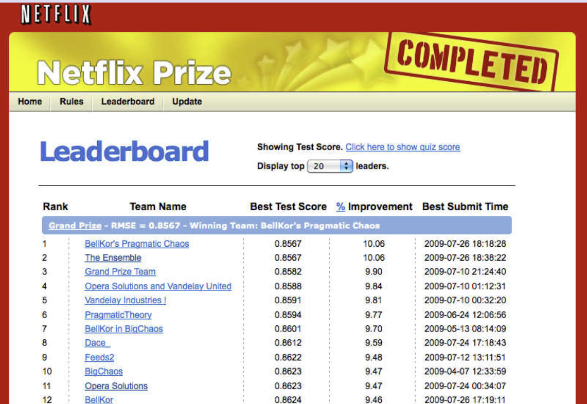
Statistical Learning versus Machine Learning
- Machine learning arose as a subfield of Artificial Intelligence.
- Statistical learning arose as a subfield of Statistics.
- There is much overlap - both fields focus on supervised
and unsupervised problems:
- Machine learning has a greater emphasis on large scale applications and prediction accuracy.
- Statistical learning emphasizes models and their interpretability, and precision and uncertainty.
- But the distinction has become more and more blurred, and there is a great deal of “cross-fertilization”.
- Machine learning has the upper hand in Marketing!
1.1.1 Example 1 (Supervised learning: Continuous output)
Wages of a group of men from the Atlantic region of the US.
The interest is in the relation/effects of various background factors (like age, education, calendar year) on wage
#install.packages("ISLR2") # install ISLR2 if not done yet
library("ISLR2") # load ISLR2
help(package = "ISLR2") # short info about the package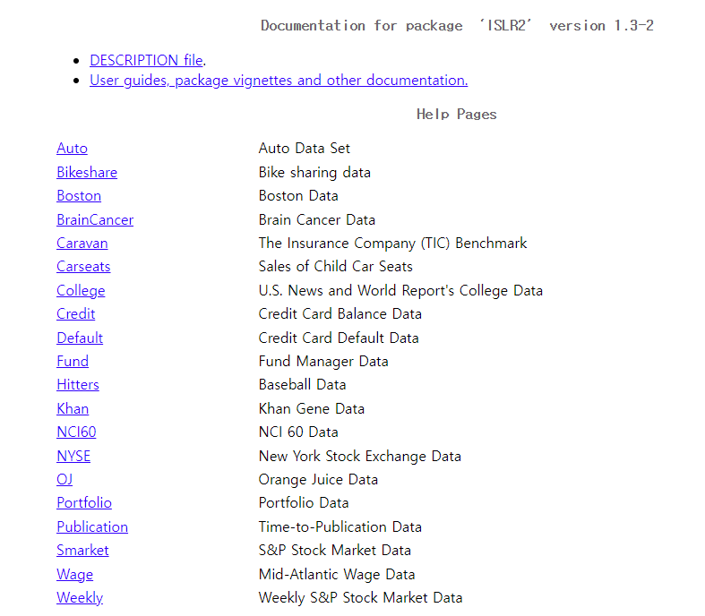
summary(Wage) # summarizing Wage data## year age maritl race
## Min. :2003 Min. :18.00 1. Never Married: 648 1. White:2480
## 1st Qu.:2004 1st Qu.:33.75 2. Married :2074 2. Black: 293
## Median :2006 Median :42.00 3. Widowed : 19 3. Asian: 190
## Mean :2006 Mean :42.41 4. Divorced : 204 4. Other: 37
## 3rd Qu.:2008 3rd Qu.:51.00 5. Separated : 55
## Max. :2009 Max. :80.00
##
## education region jobclass
## 1. < HS Grad :268 2. Middle Atlantic :3000 1. Industrial :1544
## 2. HS Grad :971 1. New England : 0 2. Information:1456
## 3. Some College :650 3. East North Central: 0
## 4. College Grad :685 4. West North Central: 0
## 5. Advanced Degree:426 5. South Atlantic : 0
## 6. East South Central: 0
## (Other) : 0
## health health_ins logwage wage
## 1. <=Good : 858 1. Yes:2083 Min. :3.000 Min. : 20.09
## 2. >=Very Good:2142 2. No : 917 1st Qu.:4.447 1st Qu.: 85.38
## Median :4.653 Median :104.92
## Mean :4.654 Mean :111.70
## 3rd Qu.:4.857 3rd Qu.:128.68
## Max. :5.763 Max. :318.34
## str(Wage) # structure of Wage data## 'data.frame': 3000 obs. of 11 variables:
## $ year : int 2006 2004 2003 2003 2005 2008 2009 2008 2006 2004 ...
## $ age : int 18 24 45 43 50 54 44 30 41 52 ...
## $ maritl : Factor w/ 5 levels "1. Never Married",..: 1 1 2 2 4 2 2 1 1 2 ...
## $ race : Factor w/ 4 levels "1. White","2. Black",..: 1 1 1 3 1 1 4 3 2 1 ...
## $ education : Factor w/ 5 levels "1. < HS Grad",..: 1 4 3 4 2 4 3 3 3 2 ...
## $ region : Factor w/ 9 levels "1. New England",..: 2 2 2 2 2 2 2 2 2 2 ...
## $ jobclass : Factor w/ 2 levels "1. Industrial",..: 1 2 1 2 2 2 1 2 2 2 ...
## $ health : Factor w/ 2 levels "1. <=Good","2. >=Very Good": 1 2 1 2 1 2 2 1 2 2 ...
## $ health_ins: Factor w/ 2 levels "1. Yes","2. No": 2 2 1 1 1 1 1 1 1 1 ...
## $ logwage : num 4.32 4.26 4.88 5.04 4.32 ...
## $ wage : num 75 70.5 131 154.7 75 ...par(mfcol = c(1,3)) # divide the screen vertically to three parts
plot(x = Wage$age, y = Wage$wage, xlab = "Age", ylab = "Annual Wage (1,000 USD)", col = "gray", pch = 20) # Wage and age
lines(lowess(x = Wage$age, y = Wage$wage, f = 1/5), col = "blue", lwd = 2) # impose trend line using lowess function
plot(x = Wage$year, y = Wage$wage, xlab = "Year", ylab = "Annual Wage (1,000 USD)", col = "gray", pch = 20) # year and wage
lines(lowess(x = Wage$year, y = Wage$wage), col = "blue", lwd = 2) # again using lowes to impose a trend line
plot(x = as.factor(as.numeric(Wage$education)), y = Wage$wage, xlab = "Eduction Level",
ylab = "Annual Wage (1,000 USD)",
col = c("steel blue", "green", "yellow", "light blue", "red")) ## box plots (when x is a factor variable (catgorial variable))
There is considerable variability in wages. The trend in the left hand panel shows that wages tend to rise up to age 45 followed some decreasing in older ages.
The middle panel show some increase over the years, the right hand panel shows clear incremental effect of education (1 = no high school diploma, 5 = advanced graduate degree).
1.1.2 Example 2 (Supervised leraning: Categorical output)
- Predict German stock market direction (Up or Down) next day on the basis of past few days direction (daily returns from the beginning of 2012 until Oct 17, 2018).
summary(Smarket) # summarizing Smarket data## Year Lag1 Lag2 Lag3
## Min. :2001 Min. :-4.922000 Min. :-4.922000 Min. :-4.922000
## 1st Qu.:2002 1st Qu.:-0.639500 1st Qu.:-0.639500 1st Qu.:-0.640000
## Median :2003 Median : 0.039000 Median : 0.039000 Median : 0.038500
## Mean :2003 Mean : 0.003834 Mean : 0.003919 Mean : 0.001716
## 3rd Qu.:2004 3rd Qu.: 0.596750 3rd Qu.: 0.596750 3rd Qu.: 0.596750
## Max. :2005 Max. : 5.733000 Max. : 5.733000 Max. : 5.733000
## Lag4 Lag5 Volume Today
## Min. :-4.922000 Min. :-4.92200 Min. :0.3561 Min. :-4.922000
## 1st Qu.:-0.640000 1st Qu.:-0.64000 1st Qu.:1.2574 1st Qu.:-0.639500
## Median : 0.038500 Median : 0.03850 Median :1.4229 Median : 0.038500
## Mean : 0.001636 Mean : 0.00561 Mean :1.4783 Mean : 0.003138
## 3rd Qu.: 0.596750 3rd Qu.: 0.59700 3rd Qu.:1.6417 3rd Qu.: 0.596750
## Max. : 5.733000 Max. : 5.73300 Max. :3.1525 Max. : 5.733000
## Direction
## Down:602
## Up :648
##
##
##
## str(Smarket) # structure of Smarket data## 'data.frame': 1250 obs. of 9 variables:
## $ Year : num 2001 2001 2001 2001 2001 ...
## $ Lag1 : num 0.381 0.959 1.032 -0.623 0.614 ...
## $ Lag2 : num -0.192 0.381 0.959 1.032 -0.623 ...
## $ Lag3 : num -2.624 -0.192 0.381 0.959 1.032 ...
## $ Lag4 : num -1.055 -2.624 -0.192 0.381 0.959 ...
## $ Lag5 : num 5.01 -1.055 -2.624 -0.192 0.381 ...
## $ Volume : num 1.19 1.3 1.41 1.28 1.21 ...
## $ Today : num 0.959 1.032 -0.623 0.614 0.213 ...
## $ Direction: Factor w/ 2 levels "Down","Up": 2 2 1 2 2 2 1 2 2 2 ...par(mfrow = c(1, 3))
plot(x = Smarket$Direction, y = Smarket$Lag1, ylab = "Today's Direction", xlab = "Dax Return (%) Yesterday",
horizontal = TRUE, col = c("orange", "skyblue"))
plot(x = Smarket$Direction, y = Smarket$Lag2, ylab = "Today's Direction", xlab = "Dax Return (%) Two Days Ago",
horizontal = TRUE, col = c("orange", "skyblue"))
plot(x = Smarket$Direction, y = Smarket$Lag3, ylab = "Today's Direction", xlab = "Dax Return (%) Three Days Ago",
horizontal = TRUE, col = c("orange", "skyblue"))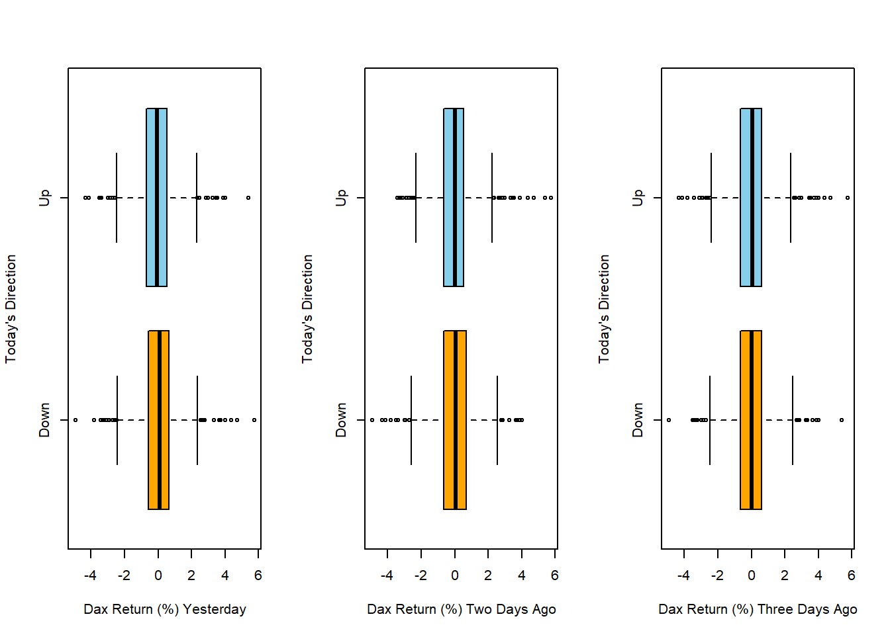
- As valuable as it would be, the graphs show that most likely historical returns do not help much in predicting the direction of future stock markets.
1.1.3 Example 3 (Unsupervised learning: Clustering observations)
Clustering consumers according to their consumption habits is an example of unsupervised learning.
The interest is to find clusters of similar consumers with similar consumption habits on the basis of the collected purchasing data.
K-means clustering and various hierarchical clustering methods are popular tools.
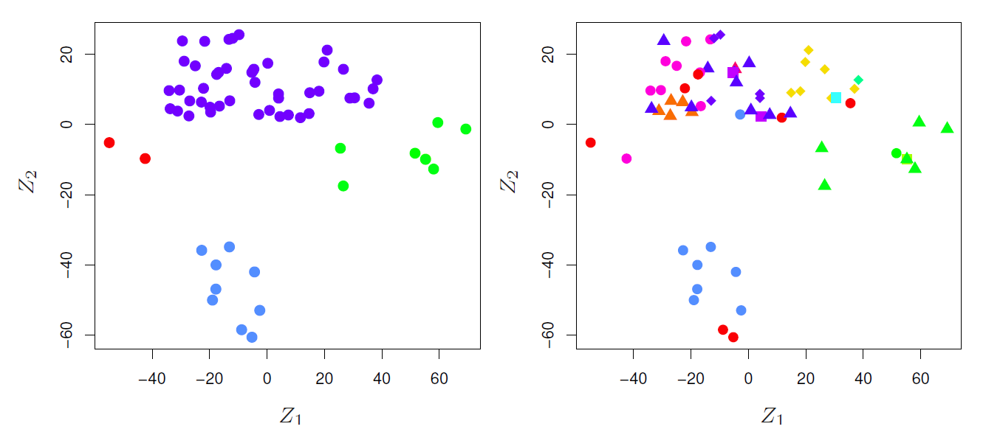
1.2 Brief History of Statistical Learning
Brief history:
Method of least squares (Legendre and Gauss, beginning of 19th century).
Linear discriminant analysis (Fisher, 1936).
Logistic regression (1940s by various authors).
Generalized linear models (Nelder and Wedderburn, 1970s).
Classification and regression trees (Breiman, Friedman, Olsen, and Stone, 1980s).
Generalized additive models (Hastie and Tibshirani, 1986).
Neural networks (Rumelhart and McClelland, 1986).
Support vector machines (Vapnik, 1992)
Nowadays by the advent of machine learning and other disciplines (analytics, big data), statistical learning is becoming a new subfield in statistics.
1.3 Notation and Simple Matrix Algebra
Choosing notation is always a difficult task.
We will use \(n\) to represent the number of distinct data points, or observations, in sample.
Let \(p\) denote the number of variables that are available for use in making predictions.
For example, the Wage data set consist of 11 variables for 3,000 people, so we have \(n=3000\) observations and \(p=11\) variables (such as year, age, race, and more).
In general, we will let \(x_{ij}\) represent the value of the \(j\)th variable for the \(i\)th observations, where \(i=1,2,\ldots,n\) and \(j=1,2,\ldots,p\).
Let \(\mathbf{X}\) denote an \(n\times p\) matrix whose \((i,j)\)th element is \(x_{ij}\).
\[ \begin{pmatrix} x_{11}&x_{12}&\cdots&x_{1p}\\ x_{21}&x_{22}&\cdots&x_{2p}\\ \vdots&\vdots&\ddots&\vdots\\ x_{n1}&x_{n2}&\cdots&x_{np}\\ \end{pmatrix} \]
- At times we will be interested in the rows of \(\mathbf{X}\), which we write as \(x_1, x_2, \ldots, x_n\).
- Here \(x_i\) is a vector of length \(p\), containing the \(p\) variable measurements for the \(i\)th observation.
\[ x_i=\begin{pmatrix} x_{i1}\\ x_{i2}\\ \vdots\\ x_{ip}\\ \end{pmatrix} \] Vectors are by default represented as columns.
- For columns of \(\mathbf{X}\), which we write as \(\mathbf{x}_1,\mathbf{x}_2,\ldots,\mathbf{x}_p\).
- Each is a vector of length \(n\)
\[ \mathbf{x}_j=\begin{pmatrix} x_{1j}\\ x_{2j}\\ \vdots\\ x_{nj}\\ \end{pmatrix} \]
- The matrix \(\mathbf{X}\) can be written as
\[ \mathbf{X}=(\mathbf{x}_1 \,\,\, \mathbf{x}_2 \,\,\, \cdots \,\,\, \mathbf{x}_p) \]
or
\[ \mathbf{X}=\begin{pmatrix} x_{1}^T\\ x_{2}^T\\ \vdots\\ x_{n}^T\\ \end{pmatrix} \]
- The \(^T\) notation denotes the transpose of a matrix or vector.
\[ \mathbf{X}^T=\begin{pmatrix} x_{11}&x_{21}&\cdots&x_{n1}\\ x_{12}&x_{22}&\cdots&x_{n2}\\ \vdots&\vdots&\ddots&\vdots\\ x_{1p}&x_{2p}&\cdots&x_{np}\\ \end{pmatrix} \]
while
\[ x_i^T=(x_{i1} \,\,\, x_{i2} \,\,\, \cdots \,\,\, x_{ip}) \]
We use \(y_i\) to denote the \(i\)th observation of the variable on which we which to make predictions.
The set of all \(n\) observations in vector form as
\[ \mathbf{y}=\begin{pmatrix} y_{1}\\ y_{2}\\ \vdots\\ y_{n}\\ \end{pmatrix} \]
Then observed data consists of \(\{(x_1,y_1), (x_2,y_2), \ldots, (x_n,y_n)\}\), where each \(x_i\) is a vector of length \(p\).
A vector of length \(n\) will always be denoted in \(lower case bold\); e.g.
\[ \mathbf{a}=\begin{pmatrix} a_{1}\\ a_{2}\\ \vdots\\ a_{n}\\ \end{pmatrix} \]
Vectors that are not of length \(n\) (such as feature vectors of length \(p\)) will be denoted in *lower case normal font, e.g. a.
Matrices will be denoted using bold capitals, such as \(\mathbf{A}\).
Random variables will be denoted using capital normal font, e.g. \(A\), regardless of their dimensions.
Occasionally, to indicate the dimension of a particular object, for example a scalar, we will use the notation \(a \in \Re\).
To indicate that it is a vector of length \(k\), we will use \(a \in \Re^k\) (or \(\mathbf{a} \in \Re^n\) if it is of length \(n\))
We will indicate that an object is an \(r\times s\) matrix using \(\mathbf{A}\in \Re^{r\times s}\).
For multiplying two matricex, suppose that \(\mathbf{A}\in \Re^{r\times d}\) and \(\mathbf{B}\in \Re^{d\times s}\)
- Then the product of \(\mathbf{A}\) and \(\mathbf{B}\) is denoted \(\mathbf{AB}\).
- The \((i,j)\)th element of \(\mathbf{AB}\) is computed by multiplying each element of the \(i\)th row of \(\mathbf{A}\) by the corresponding element of the \(j\)th column of \(\mathbf{B}\).
- That is, \((\mathbf{AB})_{ij}=\sum_{k=1}^d a_{ik}b_{kj}\).
Example
\[ \mathbf{A}=\begin{pmatrix} 1&2\\ 3&4\\ \end{pmatrix} \,\,\, and \,\,\, \mathbf{B}=\begin{pmatrix} 5&6\\ 7&8\\ \end{pmatrix} \]
Then
\[ \mathbf{AB}=\begin{pmatrix} 1&2\\ 3&4\\ \end{pmatrix} \begin{pmatrix} 5&6\\ 7&8\\ \end{pmatrix}=\begin{pmatrix} 1\times 5+2\times 7&1\times 6 + 2\times 8\\ 3\times 6 + 4\times 7&3\times 6 + 4 \times 8\\ \end{pmatrix}= \begin{pmatrix} 19&22\\ 43&50\\ \end{pmatrix} \]
- Note that this operation produces an \(r\times s\) matrix.
- It is only pssible to compute \(\mathbf{AB}\) if the number of columns of \(\mathbf{A}\) is the same as the number of rows of \(\mathbf{B}\).